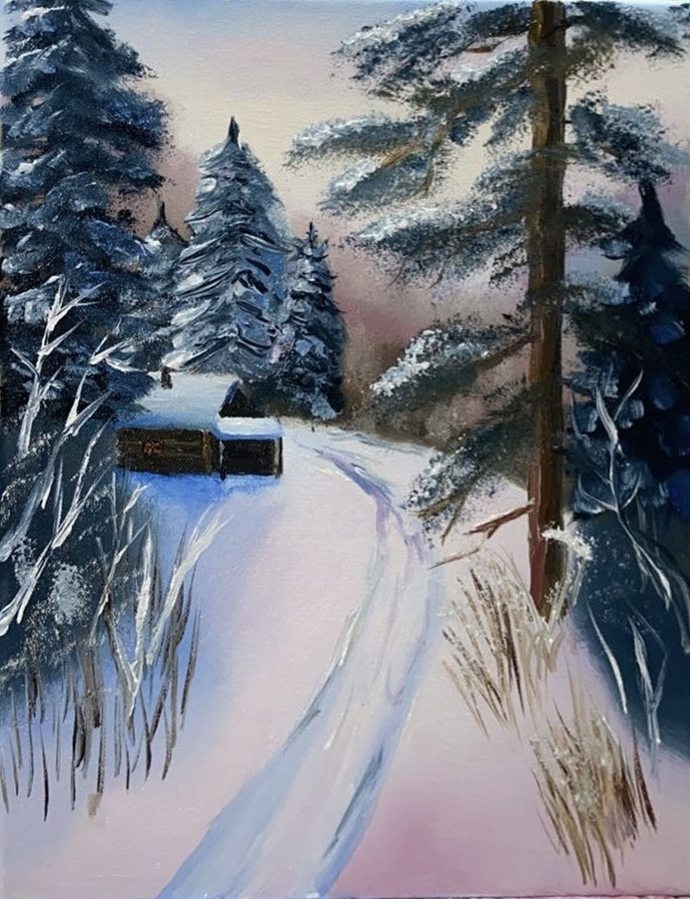
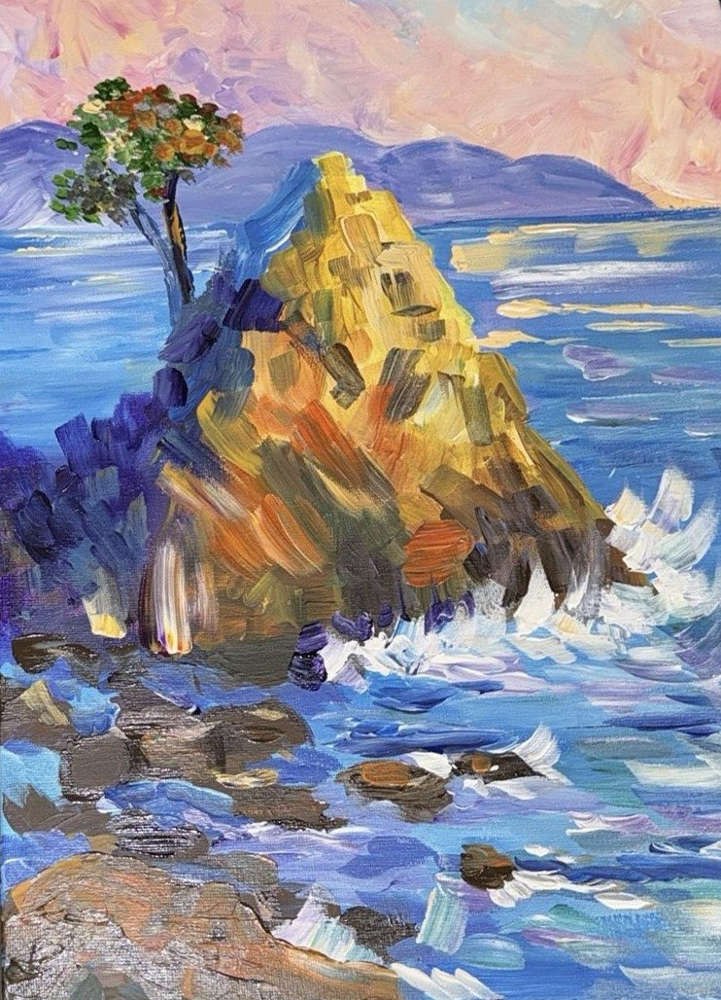
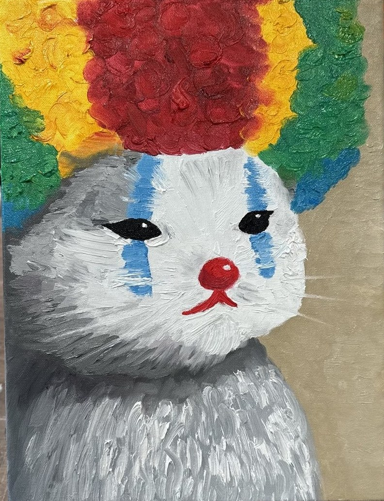

The collection · 3 works
Read up close
Every painting has numbered points. Tap one and the canvas leans in to show you what is happening there. “Show structure” draws the bones of the composition; the pigment samples are taken from the paint itself.
Room I · Winter landscape
The Path Home

The background of this room is a colour field after Rothko, mixed from the painting’s own pigments.
Room II · Seascape
The Rock Holds

The background of this room is a colour field after Rothko, mixed from the painting’s own pigments.
Room III · Portrait (of a sort)
Not Amused

The background of this room is a colour field after Rothko, mixed from the painting’s own pigments.